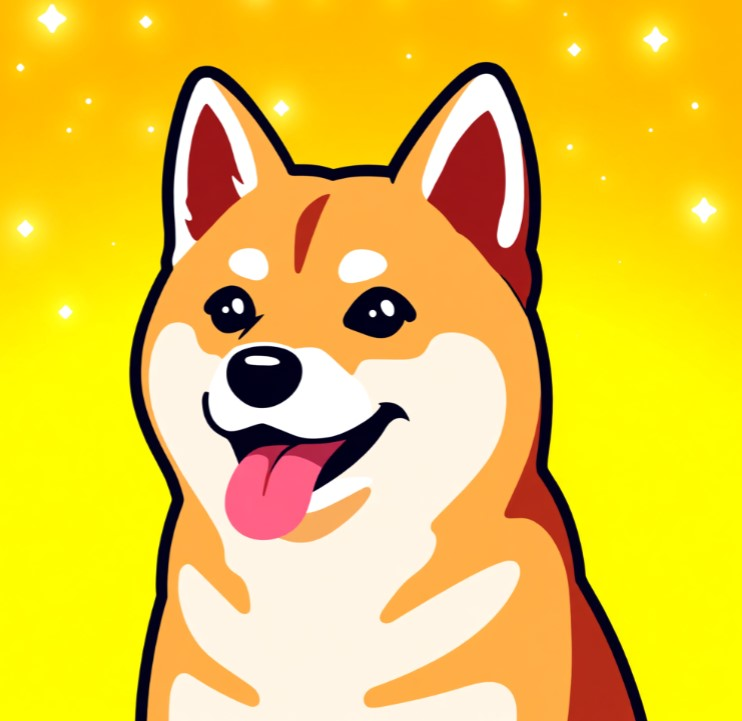

Spend any amount of time in crypto spaces and you'll notice something: most communities are intense, competitive, and occasionally hostile to outsiders. Then you wander into Dogecoin spaces, and the tone is just... different. More jokes. More memes. Considerably less yelling about why everyone else's favorite coin is a scam.

This isn't an accident, and it's not just because Dogecoin started as a joke. It's baked into the actual history.
A Coin Literally Built on Being Nice
Dogecoin was created in 2013 by Billy Markus and Jackson Palmer specifically as a parody of the increasingly self-serious crypto market at the time. The Shiba Inu meme face wasn't a branding decision made by a marketing team — it was a joke that got out of hand in the best possible way, and the community that formed around it inherited that lightness from day one.
That early culture produced something genuinely unusual for crypto: the Dogecoin community became known for charitable and goodwill gestures almost as much as for the coin itself. Dogecoin users famously crowdfunded sponsorships, tipped each other on Reddit just for being helpful, and built a reputation around generosity rather than gatekeeping — a culture that's stuck around for over a decade since.
The "Tip Jar" Mentality That Never Went Away
A lot of crypto communities are built around scarcity mindset — protecting bags, talking up price targets, treating outsiders with suspicion. Dogecoin culture, from the beginning, leaned the opposite direction: small amounts, given freely, just to make someone's day slightly better. It's a low-stakes currency culturally, and that low-stakes feeling has made it one of the friendliest on-ramps into crypto for people who'd otherwise find the space intimidating.
Spending DOGE on Something That Actually Matches the Vibe
This is exactly the spirit behind using Dogecoin to claim a star on GalaxySpace — a small, genuinely fun, slightly silly gesture (naming a star after a friend, a pet, an inside joke) that costs next to nothing and fits the same "small amount, given freely, just for the joy of it" energy the Dogecoin community has carried since 2013.
You can claim your own star and pay with DOGE here — about as on-brand for the Dogecoin community as it gets.